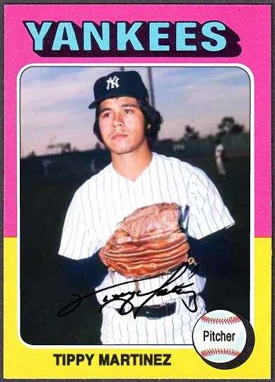

Tippy Martinez "Tippy"
Career Highlights & Facts
(Facts are AI-generated and may require verification)
- Achieved the only instance in major league history of picking off 3 runners in a single inning.
- Possessed a legendary, unhittable curveball that teammates claimed could break in 2 directions.
- Earned a professional athlete of the year honor for a championship season.
Would you like to find out more about Tippy Martinez?
Player Biography
Tippy Martinez
May 4, 2021
/
in
BioProject - Person
1980s All-Stars
/
by
admin
This article was written by
Malcolm Allen
A lefty reliever with a devastating curveball, Tippy Martinez pitched for 14 major league seasons from 1974 to 1988. Between starting his career with the New York Yankees and ending it with the Minnesota Twins, he spent 11 years with the Baltimore Orioles, where he was an All-Star and World Series champion in 1983. That summer, he made history by
picking three runners off first base
in the same inning.
Felix Anthony “Tippy” Martinez was born on May 31, 1950, in La Junta, Colorado, a municipality of about 8,000 residents in the southeastern part of the state. He grew up with his parents, Felix and Eva Genevieve (Roybal) Martinez, and older sister Peggy. The elder Felix, an Arizona-born ranch worker’s son, was a foreman at La Junta Municipal Airport. Eva, a coal miner’s daughter, became a top sales representative for Kentucky Central Life Insurance.
1
Young Felix was nicknamed “Tippy” by his aunt Helen, who never explained why.
2
In La Junta, most of the menial jobs were handled by Spanish speakers. Tippy had a Cherokee grandmother, his father was of Mexican heritage and his mother’s roots were in Spain, but he spoke only English. Nevertheless, he faced discrimination. “I’d ask a girl out and she’d say, ‘My parents won’t let me because you’re Spanish’,” he said.
3
Later, in pro baseball, he said, “I’m afraid some people assume I don’t speak English well. I’ll go and start talking in front of people just to let ‘em know, ‘Hey, I can talk, too’.”
4
At La Junta High School, Tippy played basketball and demonstrated a knack for big football plays, like an 82-yard kickoff return for a touchdown as a junior.
5
As a senior, he scored on a 90-yard reception in the season opener.
6
Two weeks later, he returned a punt 65 yards for another TD.
7
In baseball, Martinez, an outfielder-pitcher, led the Tigers to a league championship as a freshman in 1966.
8
Over the next three years, he teamed up with fellow lefty Jim Sullivan to form a dominant duo, frequently striking out 16 or more opposing hitters.
9
During summers, he advanced from Babe Ruth League to Connie Mack ball, hurling a 1-0 victory in the South Plains Regional Playoffs of a Connie Mack tournament in Sikeston, Missouri, when he was 18.
10
When Martinez’s parents offered to buy him a motor scooter, he convinced them to send him to the Big State Baseball Camp in Waco, Texas, instead.
11
He learned his pickoff move there, and wrote in an early-career publicity questionnaire, “It was really humorous to see the runners expecting a throw home and getting picked off.”
12
Martinez’s velocity increased after Washington Senators’ scout Lee Anthony encouraged him to grip his fastball with three fingers instead of his whole hand. As a junior, he discovered his curveball after absorbing an encyclopedia’s description of the effects of twisting the wrist when throwing a baseball.
13
He finished his La Junta career with a 22-4 record.
14
When the Senators drafted a La Junta pitcher in the 13th round of the 1969 June Amateur draft, however, it was the 6-foot-1 Sullivan. Washington also selected Martinez, but as an outfielder in the 35th round. Both Martinez and Sullivan opted to attend Colorado State University instead. “I wasn’t ready for pro baseball then,” Martinez explained.
15
A sore arm bothered Martinez during his first year at Colorado State.
16
As his baseball future stalled, his off-field life accelerated. He married high school sweetheart Carol Sario, and their son Jacen was born in 1970, followed by daughter Courtney in 1978. Prior to his junior year of college, Martinez pitched for the Puebla Diablos in Colorado’s semipro Metro League in 1971, going 5-1 with a circuit-best 59 strikeouts in 44 innings.
17
He hit a ninth-inning, two-run homer to earn one of his victories.
18
His most outstanding performance was a shutout of the Boulder Collegians, who hadn’t lost a league game in two years or been blanked in 128 contests.
19
According to the
Colorado Springs Gazette-Telegraph
, the Collegians were a powerhouse that “annually recruits the best players in the country off the college campus.”
20
In the summer of 1971, their roster featured future big leaguers
Roy Smalley
,
Dave Chalk
and
Bob Reece
.
21
Martinez built on his success at Colorado State in 1972 by going 10-1 with a Rams’ record 1.25 ERA.
22
He was a unanimous Western Athletic Conference All-Star pick, but he wasn’t drafted.
23
“I heard they thought I was too small,” said the 5-foot-10, 180-pounder.
24
After Martinez twirled a pair of two-hitters for the semipro Grand Junction Eagles that summer, the club’s manager –Yankees’ scout Sam Suplizio– intended to sign him after one more outing. “I just got rocked, I mean they killed me. Do you still want to sign me?” Martinez recalled asking. “[Suplizio] said, ‘Are you kidding me. You have to learn that you’re not going to be good all the time’.”
25
On August 2, Martinez made his professional debut for the Oneonta (New York) Yankees in the Single-A New York Pennsylvania League by carrying a no-hitter into the seventh inning and shutting out Niagara Falls.
26
He earned a save next time out and finished the year by hurling 20 innings for the Kinston (North Carolina) Eagles in the Single-A Carolina League.
Back at Kinston in 1973, Martinez struck out 160 batters in 105 innings and posted a 13-8 record despite making all but two of his 54 appearances in relief. His 15 saves tied for the league lead. The Yankees promoted him to the Triple-A International League in 1974, where he served as the Syracuse Chiefs’ top reliever. On August 8, he was called up to the majors to replace injured right-hander
Dave Pagan
.
27
In Martinez’s debut at Anaheim Stadium on August 9, he uncorked a bases-loaded wild pitch to the first hitter he faced. Yankees’ manager
Bill Virdon
told him, “I believe in you. You’re the guy we’re going to depend on. No matter what you do.”
28
Martinez made a total of three wild pitches in his first two appearances and was called for two balks in his third. “I was completely nervous,” he confessed. “[Virdon] said if I was afraid of making mistakes, I’d make them. That was exactly what I did.”
29
He spent lots of time in hotel coffee shops with Yankees’ catcher
Thurman Munson
. “[Munson] cared about rookies,” Martinez recalled. “He always picked up the check. All he asked of me was that, when I made the big money, I do it for somebody else.”
30
That winter in the Venezuelan League, Martinez posted a 1.71 ERA in 84 innings for the Cardenales de Lara.
31
“Now I’m thinking I’m just as good as anybody,” he said in 1975 spring training. “All rookies are scared. Some get the fearness [sic] out quicker. I think I got over that.”
32
Another indication that Martinez was feeling more comfortable occurred when he gave a hotfoot to the Yankees’ major offseason acquisition, reigning Cy Young Award winner
Catfish Hunter
, who responded by nailing the southpaw’s shoes to a bench in the clubhouse.
33
Martinez won the James P. Dawson award as the top rookie in camp and only missed making the team when an injury to veteran
Dick Tidrow
forced New York to carry another right-hander instead.
34
Ron Guidry
was Syracuse’s bullpen ace in 1975, so Martinez moved into the rotation and went 8-2 with a 2.05 ERA in 14 starts, earning a return to the majors after the All-Star break. Other than what proved to be his only two big league starts, the rest of his 23 appearances came out of the bullpen. After Martinez notched his first save on July 22, Virdon said. “He has been and will be the end man until we can get
Sparky [Lyle
fixed.”
35
Despite not joining the team until July 17, Martinez led the Yankees with eight saves.
In 1976, however, Lyle regained his form and the closer’s job. “I learned from Sparky that a good reliever is just as important as a starter,” Martinez said. “He was my idol. He took pride in what he did.”
36
On June 15, Martinez was traded to the Baltimore Orioles in a 10-player deal. In addition to pitchers
Rudy May
and Dave Pagan, Baltimore received three players who remained Orioles for more than a decade: catcher
Rick Dempsey
and southpaws
Scott McGregor
and Martinez.
When Martinez joined the Orioles, he recalled, “[Baltimore manager]
Earl [Weaver
came up to me and said, ‘Do you want to start or relieve?’ I told him I wanted to relieve because it would give me more opportunities to help the club and catch the Yankees.”
37
Martinez went on to make more career relief appearances than any pitcher in Baltimore history (as of 2021), with more of his wins and saves against New York than any other opponent. In 1976, he led Baltimore with eight saves, with a combined 2.33 ERA in 39 appearances. The Orioles signed him to a three-year contract.
38
Prior to the 1977 season, Martinez completed his physical education degree from Colorado State; the professor allowed Weaver to administer the final exam.
39
In 41 outings, Martinez posted a 2.70 ERA and led the Orioles again with nine saves. His parents were on hand to witness the first one on June 3 in Kansas City, a contest that concluded with what the
Baltimore Sun
called “one of the most exciting plays in the history of the Orioles.” Protecting a two-run lead with the bases loaded and nobody out in the bottom of the ninth, Martinez threw the pitch that resulted in a game-ending triple play.
40
In 1978, Martinez endured a miserable first half. He surrendered a walk-off homer on April 18 in New York and was ejected five days later for the only time in his career. By the All-Star break, his ERA was 6.14. “I had tendonitis, but I didn’t tell anyone,” he explained. “It was a big mistake on my part.”
41
He improved following a mid-season cortisone shot, but Weaver didn’t use him at all during a 26-day September stretch.
The Orioles nearly traded Martinez in spring training 1979. “Tippy Martinez to Go,” headlined a March 28
Baltimore Sun
article predicting a deal to the Braves or Angels within the week.
42
Rumors continued until the June 15 trading deadline, when Martinez was nearly shipped to Detroit for catcher
Milt May
.
43
Though the Orioles were in first place, Martinez had only pitched in 12 of the first 62 games, ranging from a one-batter appearance against the Yankees to 6 1/3 innings of shutout relief in Oakland on April 29. After the latter, Weaver told him, “Martinez, you’re not going anywhere.”
44
He became a key piece of Baltimore’s 1979 AL pennant winners, posting a 2.33 ERA in 54 innings after the deadline passed and a career-best 10-3 record overall. On July 23, he retired 23 consecutive Oakland A’s, beginning a 38-batter stretch in which he permitted only one single and a second runner who reached on an error.
45
He didn’t allow a homer all season. “This is the first year that my arm doesn’t bother me,” Martinez said. “My fastball has more zip now. The radar gun timed it at 90 this season, and I couldn’t get much over 83 last year.”
46
By tucking his head more to keep his delivery closed, Martinez reduced the pressure on his shoulder, according to pitching coach
Ray Miller
. “He’s using his body more instead of all arm,” Miller observed.
47
Martinez also said his increased confidence –and Weaver’s confidence in him– made a difference when it came to getting outs.
48
“I always had confidence in him,” Weaver insisted. “If I didn’t, he wouldn’t have a uniform or a locker here. The guy is pitching more because he’s hot.”
49
In the first of Martinez’s three appearances in the 1979 World Series against the Pittsburgh Pirates, he whiffed MVP
Willie Stargell
to complete a perfect eighth inning with Game Two tied, 2-2. Baltimore lost in the ninth after Weaver replaced him with
Don Stanhouse
, however, and dropped the series in seven. Nevertheless, the municipality of La Junta held a Tippy Martinez Day in November. He bought a home in Towson, near Baltimore, that offseason.
50
Martinez’s fine season in 1980 included 53 appearances with a 3.01 ERA that would’ve been 2.39, save for one poor outing in Toronto. On May 12 he hurled a career-high 8 1/3 innings. He struck out a personal best nine against the Angels on August 30 (a feat he matched against the same opponent exactly one year later). Martinez saved 10 of Baltimore’s 100 victories. “The guy is absolutely invaluable,” raved Weaver. “Look at the elasticity of his arm, the innings he gives us with only a little rest and the tough spots he comes into.” Miller said, “Tippy has one of the most amazing arms in baseball…He’s a wonder.”
51
Though tough outings were becoming less frequent, Martinez was better equipped than ever to deal with them. Earlier in his career, he confessed, “I’d just sit there fuming, ‘How could they beat me?’ Finally, it just hit me how ridiculous it was for me to sit there and think that winning a game was the biggest thing in the world.” Inspired by teammate
Pat Kelly
, he became more devoted to his Christian faith. “I’d look at him and think, ‘Why is he always happy?’ I wanted that type personality, and I wanted to be able to go out and try as hard as I could, yet accept the results.”
52
In January 1981, he signed a five-year contract extension to remain an Oriole through 1986.
53
By striking out
Rickey Henderson
to preserve a one-run victory over Oakland on May 19, he passed Grant Jackson for the most career saves by a lefty in Baltimore franchise history.
54
Martinez worked more than ever in 1982, appearing in 76 games to set an Orioles’ record.
55
He was never sharper than in July, when he earned AL pitcher of the month honors by appearing in 16 of Baltimore’s 27 games and going 2-0 with five saves over 19 scoreless innings. He permitted only six hits and three walks while striking out 22. “I got into the kind of groove I always believed I could get into,” he said.
56
A heavy workload not only benefitted his control but also occasionally led to his throwing what
Washington Post
writer Tom Boswell called an “inexplicable backup curve.” The Yankees’
Graig Nettles
described it as “the only pitch I’ve ever seen break in two directions.” According to Orioles’ coach Elrod Hendricks, “We all wish [Martinez] could throw it on command because it’s unhittable. But he can’t. He can’t even explain it.”
57
Martinez was especially tough on lefties, as Hall of Famers
Reggie Jackson
(3-for-32 against him),
George Brett
(3-for-20) and
Harold Baines
(3-for-19) could attest. But he longed for the opportunity to face all hitters with the game on the line. “When Earl takes me out of a game after I get a couple of left-handed batters out, he’ll say, ‘Great work. I’m sorry I gotta do this’,” Martinez said. “Sometimes you have to do the horse work and somebody else gets more credit, which is fine. As long as the team wins, I’m for it.”
58
The Orioles won 94 games in 1982 but lost the AL East to the Brewers on the final day of the season.
In 1983, Weaver retired, and Martinez was Baltimore’s undisputed bullpen ace under new manager
Joe Altobelli
, earning 10 of the team’s first 11 saves and an invitation to the All-Star Game. But he missed the Midsummer Classic, and all of July, because of an emergency appendectomy. “My wife thought I would be out for the season. I was worried too, but when I came back the doctors told me there was no chance of causing another injury.”
59
In 31 appearances from August 2 through the end of the regular season, Martinez was 4-0 with 11 saves and a 1.46 ERA.
He made baseball history on August 24 at
Memorial Stadium
. Trailing the Brewers by a half-game in the AL East race, the Orioles had rallied to force extra innings against the visiting Blue Jays but fell behind again after
Tim Stoddard
allowed a homer and a single to start the top of the 10th. When Martinez relieved, the depleted Orioles had outfielders
Gary Roenicke
and
John Lowenstein
manning third base and second base, respectively, and utility infielder
Lenn Sakata
catching for the only time in his career. While Sakata anticipated an opportunity to throw out Toronto’s
Barry Bonnell
on a steal attempt, Martinez worried whether his teammate would be able to glove his fastball, never mind the curve.
Although Martinez was difficult to steal against, he characterized his move to first as “average” and he picked off only a dozen runners in 834 major-league innings.
60
Before throwing his first pitch, Martinez caught Bonnell leaning the wrong way –“He seemed like he was ready to take off,” the pitcher explained– and first-baseman
Eddie Murray
tagged him for the first out. Following a five-pitch walk to
Dave Collins
, Martinez made “two so-so moves toward first” before nailing him as well with a better one on the third try.
Willie Upshaw
beat out an infield hit on Martinez’s sixth pitch but was picked off as well! It was the only time in major league history that a pitcher picked off three runners in an inning. “Sure, I’ve done it before. Back in Little League,” Martinez insisted.
61
“I threw over there because Eddie was the only one I recognized.”
62
In the bottom of the inning,
Cal Ripken
hit a tying home run and Sakata won the game with a two-out, three-run blast. The victory started a season-best, eight-game winning streak that lifted the Orioles into first place to stay.
Martinez finished the year with career highs in saves (21) and innings (103 1/3) despite missing a month. In the ALCS against the White Sox, he pitched twice, including four scoreless innings in the pennant clincher at
Comiskey Park
when he struck out
Tom Paciorek
for the final out. “The hardest series to win is the one to get into the World Series,” Martinez said.
63
In the World Series, Martinez saved one-run victories over the Phillies in Games Three and Four at Veterans Stadium, and Baltimore prevailed in five. La Junta proclaimed October 25 “Tippy Day” and named a Little League field in his honor. Colorado chose him as the state’s 1983 Professional Athlete of the Year.
64
In 1984, Martinez became Baltimore’s all-time save leader on August 31 by notching his 100th to pass
Stu Miller
.
65
Overall though, the season was an ordeal as he had dye injected into his sore shoulder and underwent a series of experimental laser treatments for pain.
66
His 13 wild pitches were more than twice as many as he had made in any other year. Overstriding and overthrowing led to career highs in losses and walks. “When Tippy is throwing his curveball the way he’s supposed to, it’s unhittable,” observed Miller. “The curves that have been hit have been at 78 or 79 mph. When he throws it at 72 or 73, he gets an out.”
67
Martinez skipped the Orioles’ fall tour of Japan to rest his shoulder.
68
He vowed to work on his changeup for 1985.
69
Things got worse instead of better, however, as his ERA –which had climbed from 2.35 to 3.91 the previous season– ballooned to 5.40. He needed work to be effective, and the more he struggled, the less he pitched. The situation came to a head on August 21 in Seattle when, pitching for the first time in 13 days, he earned a quick hook by walking consecutive hitters. Weaver, who’d come out of retirement to replace the fired Altobelli in June, began screaming at Martinez when the pitcher remarked that pitching after such a long layoff was a tough assignment. Beat writer Richard Justice noted, “If you’re counting, their blowup…probably ran their career total to above 20, maybe 30.”
70
The Orioles encouraged Martinez to develop a slider in the Florida Instructional League that fall.
71
His fastball was clocked at 89 in spring training.
72
When the 1986 season started, he pitched three times without incident, but he felt dizzy warming up on April 19 and exited after facing only one batter.
73
Doctors diagnosed an inner ear infection, and he missed a month. He returned in late May after six tune-up innings in Triple-A, but went on the disabled list with a sore shoulder on June 19 after eight appearances. When he was activated, he pitched only twice more before he was disabled again. One doctor told Martinez that his shoulder looked like an 80-year-old’s, and that he would never pitch again. He sought a second opinion from Dr. James Andrews, the surgeon who’d repaired that season’s eventual Cy Young Award winner, Red Sox righty
Roger Clemens
. “I can fix this,” Andrews assured Martinez, though he cautioned that the lefty would have to rest for a year.
74
Martinez had rotator cuff surgery in August and began an extensive rehabilitation program.
When the 1987 season started, Martinez remained in Florida for extended spring training. “I should’ve waited a full year to try to come back,” he acknowledged in 2021.
75
In June, he believed he was ready, but Baltimore wanted him to accept an assignment to the Single-A Carolina League to continue rehabilitating with the Hagerstown (MD) Suns. When Martinez refused, the club released him. It wasn’t a complete surprise, but he was disappointed to hear the news via the radio. “What I wanted to do was have a press conference, do it in style and with some class,” he said. “It’s really sad the Orioles didn’t do that. That hurt me, because I set records for them.”
76
In 1988, Martinez went to spring training with the reigning World Series champion Minnesota Twins. “I’m really excited,” he said. “My curveball is breaking just the way it used to do, and I never expected that.”
77
The 37-year-old made the team, along with
Steve Carlton
and
Joe Niekro
, both of whom were 43. None of them lasted a month. Martinez was the first to go; released on April 21 after only three appearances with an 18.00 ERA. His career ended with a 55-42 record, 3.45 ERA and 115 saves in 546 games over 14 seasons.
Martinez resurfaced as a starting pitcher with the Bradenton Explorers of the
Senior Professional Baseball Association
in 1989, posting a 2-3 record and 4.30 ERA. When the Explorers moved to Daytona Beach the following fall, he went with them, but the circuit folded in mid-season. He helped promote Denver’s bid to receive a National League expansion franchise in 1993, but the front office position that he hoped for never materialized.
78
He spent three years as a substitute physical education teacher in the Baltimore County public school system. From 2007 to 2009, Martinez was the pitching coach for the York (PA) Revolution of the independent Atlantic League. As of 2021, he resides near Baltimore with Carol, his wife of more than a half century. After peaking as a Single-A second baseman, his son Jacen became a certified physician assistant. Daughter Courtney coached Arizona State’s lacrosse team for two years.
The Colorado State Athletics Hall of Fame welcomed Martinez as part of its inaugural induction class in 1988.
79
He was also honored by the Colorado Sports Hall of Fame in 2003. In between, the Baltimore Orioles enshrined Martinez in their team HOF in 2000. As of 2021, his 499 relief outings for Baltimore remain a team record.
Jim Palmer
is the only Orioles pitcher to appear in more games (558). Wherever Martinez goes, people ask him about picking off three runners in one inning. “That’s what I’m known for,” he said. “I did a lot more than that.”
80
Last revised: May 5, 2021
Acknowledgments
Special thanks to Tippy Martinez (telephone interview with Malcolm Allen, March 4, 2021).
This biography was reviewed by James Forr and Norman Macht and checked for accuracy by SABR’s fact-checking team..
Sources
In addition to the sources cited in the Notes, the author also consulted
www.ancestry.com
,
www.baseball-reference.com
and
www.retrosheet.org
.
Notes
1
“Eve Genevieve Martinez,”
https://www.horancares.com/obituary/eva-genevieve-martinez
(last accessed February 2, 2021).
2
Sue Fornoff, “Perfectionist Tippy Martinez Ponders His Relief Role,”
Baltimore Sun
, July 7, 1978: C8.
3
Steve Jacobson, “Martinez’ Save A Blessed Event,”
Newsday
(Long Island, New York), July 23, 1975: 84.
4
Thomas Boswell, “Tippy: A Native Son at His Zenith,”
Washington Post
, July 30, 1982: D1.
5
“Canon City Wins, 20-7,”
Colorado Springs Gazette-Times
, September 30, 1967: 17.
6
“La Junta Smashes Glads, 32-7, in Grid Opener,”
Colorado Springs Gazette-Telegraph
, September 7, 1968: 13.
7
Gary Coleman, “St Mary’s, Cheyenne Lone Victors,”
Colorado Springs Gazette-Telegraph
, September 24, 1968: 10.
8
“Tiger Baseball Team Wins League Crown,” La Junta High School 1966 Yearbook: 12.
9
After teaming with Martinez at Colorado State, Sullivan was drafted by the New York Yankees but made only six appearance in Single-A before his career was derailed by an arm injury.
10
“La Junta Wins in Connie Mack Regional Play,”
Colorado Springs Gazette-Telegraph
, August 15, 1968: 25.
11
Michael Janofksy, “Side is Retired on Pickoffs,”
New York Times
, August 26, 1983: A20.
12
Tippy Martinez, Publicity Questionnaire for William J. Weiss, September 14, 1972.
13
Moss, “La Junta’s Martinez One of State’s Best.”
14
Irv Moss, “La Junta’s Martinez One of State’s Best,”
Denver Post
, April 24, 2000,
https://extras.denverpost.com/rock/moss0424.htm
(last accessed February 2, 2021).
15
Dave Socier, “Felix ‘Tippy’ Martinez,”
https:
(last accessed February 2, 2021).
16
“Colorado State Athletics Hall of Fame: Felix ‘Tippy’ Martinez,”
https:
(last accessed February 2, 2021).
17
“Michel, Robkin Hit Metro Top Ten List,”
Colorado Springs Gazette-Telegraph
, July 26, 1971: 16.
18
“Elks Meet Birds in Quarters,”
Colorado Springs Gazette-Telegraph
, July 26, 1971: 14.
19
Socier, “Felix ‘Tippy’ Martinez.”
20
Larry Woodburn, “Blue Sox Face Collegians,”
Colorado Springs Gazette-Telegraph
, July 15, 1971: 41.
21
“Blue Sox Play Host to Strong, Undefeated Collegians Tonight,”
Colorado Springs Gazette-Telegraph
, July 7, 1971: 44.
22
“Colorado State Athletics Hall of Fame: Felix ‘Tippy’ Martinez.”
23
“Cougars Top WAC Northern All Stars,”
Colorado Springs Gazette-Telegraph
, May 25, 1972: 53.
24
Tippy Martinez, Telephone Interview with Malcolm Allen, March 4, 2021. (hereafter Martinez-Allen interview)
25
Jen Rynda, “Former Baltimore Orioles Pitchers Ross Grimsley and Tippy Martinez Talk About Making it to the Majors,” Baltimore Sun Media Group,
https:
(last accessed February 2, 20210.
26
Jud Magrin, “Oneonta Yanks Blank Pirates Twice,”
Oneonta Star
, August 3, 1972: 40.
27
“Yanks Go West, Pagan Goes to Farm,” New York Times, August 9, 1974: 27.
28
Martinez-Allen interview.
29
Steve Jacobson, “Martinez Complicating Virdon’s Pitching Plans,”
Newsday
, March 20, 1975: 191.
30
Pat Calabria, “He Cared About Rookies, the Orioles Recall,”
Newsday,
August 4, 1979: 26.
31
Venezuelan statistics from
http://www.pelotabinaria.com.ve/beisbol/mostrar.php?ID=martfel001
(last accessed February 2, 2021).
32
Jacobson, “Martinez Complicating Virdon’s Pitching Plans,”
33
Murray Chass, “Hunter Tries to be One of the Guys -Succeeds,”
New York Times
, March 23, 1975,
https:
(last accessed February 2, 2021).
34
1977 Baltimore Orioles Media Guide: 72.
35
Martinez officially earned his first major-league victory on July 12, but he did it after getting the last out of the 16th inning of a suspended contest that was completed on July 19.
36
Tom Yantz, “Lyle Taught Martinez Bullpen Role Was Vital,”
Hartford Courant
, September 18, 1983: D7.
37
Martinez-Allen interview.
38
1977 Baltimore Orioles Media Guide: 72.
39
Socier, “Felix ‘Tippy’ Martinez.”
40
“Triple-Play in 9th Helps Birds Hold Off Kansas City, 7 to 6,”
Baltimore Sun
, June 4, 1977: B5.
41
Ken Nigro, “Weaver to Keep Cool if Tippy is Shelled,”
Baltimore Sun
, February 28, 1980: C7.
42
“Tippy Martinez to Go,”
Baltimore Sun
, March 28, 1979: C9.
43
Ken Nigro, “Now the Orioles Doff Their Hats to Tippy,”
The Sporting News
, September 1, 1979: 29.
44
Martinez-Allen interview.
45
1980 Baltimore Orioles Media Guide: 124.
46
Nigro, “Now the Orioles Doff Their Hats to Tippy.”
47
Nigro, “Tippy Martinez is Impressive.”
48
Seymour S. Smith, “Tippy Martinez Believes Confidence is Paramount,”
Baltimore Sun
, April 20, 1980: C14.
49
Nigro, “Now the Orioles Doff Their Hats to Tippy.”
50
1980 Baltimore Orioles Media Guide: 125.
51
Ken Nigro, “Orioles Marvel at Tippy’s Durable Arm,”
The Sporting News
, October 4, 1980: 10.
52
Richard Justice, “Tippy Martinez Set to be ‘The Man’ Again,”
Baltimore Sun
, April 6, 1984: D1.
53
Ken Nigro, “Tippy Martinez Signs Oriole Pact,”
Baltimore Sun
, January 16, 1981: C7.
54
Zack Britton
surpassed Martinez in 2016.
55
B.J. Ryan
equaled the mark in 2003 and 2004, and both
Jamie Walker
(81) and
Chad Bradford
(78) surpassed it in 2007.
56
Ray Parrillo, “Tippy Would Warm Up Less,”
Baltimore Sun
, March 15, 1983: C1.
57
Thomas Boswell, “Tippy: A Native Son at His Zenith,”
Washington Post
, July 30, 1982: D1.
58
Boswell, “Tippy: A Native Son at His Zenith.”
59
Yantz, “Lyle Taught Martinez Bullpen Role Was Vital.”
60
Jim Seip, “Revs’ Pitching Coach Tippy Martinez Remembers an Odd Situation From 1983,”
York Daily Record
, April 2, 2007: 7.
61
Janofksy, “Side is Retired on Pickoffs.”
62
Kent Baker, “Tippy Builds Confidence in Role as Orioles’ Premier ‘Stopper’,”
Baltimore Sun
, March 6, 1984: C1
63
Socier, “Felix ‘Tippy’ Martinez.”
64
1984 Baltimore Orioles Media Guide: 142.
65
Gregg Olson
set a new record in 1992.
66
Richard Justice, “Tippy Martinez Receives Laser Relief,”
Baltimore Sun
, July 18, 1984: 4E.
67
Richard Justice, “Miller Helps Tippy Martinez’s Unhittable Curve,”
Baltimore Sun
, August 14, 1984: 3C.
68
1985 Baltimore Orioles Media Guide: 150.
69
Richard Justice, “Tippy Martinez Will Add Changeup to his Fastball, Curve Next Season,”
Baltimore Sun
, August 8, 1984: 8D.
70
Richard Justice, “Weaver’s Blast Arouses Tippy Martinez’s Anger,”
Baltimore Sun
, August 23, 1985: 3E.
71
Richard Justice, “Tippy Martinez Will Work on Developing a Slider,”
Baltimore Sun
, September 20, 1985: 3F.
72
Richard Justice, “Doctors Tell Martinez His Shoulder’s Worn Out,”
Washington Post
, July 23, 1986: D3.
73
Tim Kurkjian, “Dizziness Drives T. Martinez to Disabled List,”
Baltimore Sun
, April 25, 1986: 1F.
74
Martinez-Allen interview.
75
Martinez-Allen interview.
76
Kent Baker, “Orioles Release Martinez,”
Baltimore Sun
, June 5, 1987: 1E.
77
Richard Justice, “Old Break on Curve Gives Tippy Martinez New Break in Career,”
Washington Post
, April 3, 1988: C6.
78
Moss, “La Junta’s Martinez One of State’s Best.”
79
“Colorado State Athletics Hall of Fame,”
https://csurams.com/honors/colorado-state-athletics-hall-of-fame?type=class_induction
(last accessed February 4, 2021).
80
Martinez-Allen interview.
Full Name
Felix Anthony Martinez
Born
May 31, 1950 at La Junta, CO (USA)
Stats
Baseball Reference
Retrosheet
Tags
1980s All-Stars
·
Career Totals
| WAR | W | L | ERA | G | GS | SV | IP | SO | WHIP |
|---|---|---|---|---|---|---|---|---|---|
| 8.6 | 55 | 42 | 3.45 | 546 | 2 | 115 | 834.0 | 632 | 1.387 |
Statistics via Baseball-Reference.com
The Original Clue